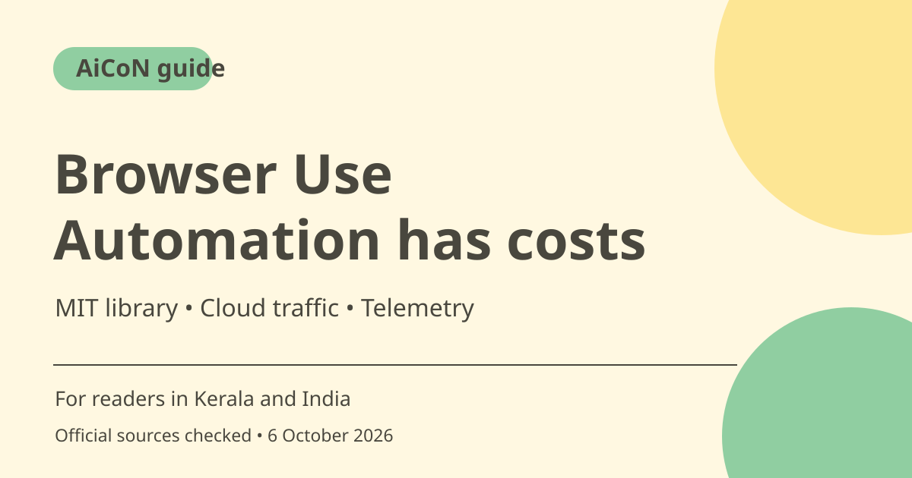

Browser Use: web automation, cloud costs and privacy
Browser Use is a developer tool for AI-driven website interaction. Its core library is MIT licensed, while cloud browsers, traffic and model use have separate charges. Before connecting real accounts, check spending controls, permissions and telemetry, then start with a harmless test.

What does Browser Use do?
The official repository describes software that gives an AI agent browser or computer actions and recovery tools. It can help automate website tasks, but a model-driven workflow is different from a fixed script. A page change, login challenge or misleading webpage can disrupt the task. The public product description does not guarantee success on your chosen site.
Who is it for in India?
This is mainly for developers who can set up a project, configure models and understand browser permissions. It is not a one-click assistant for every phone user. Begin with a public website and a read-only outcome. For sensitive work, decide what the agent may read, send or change before connecting a profile with saved logins.
Open source is separate from cloud services
The repository identifies the library as MIT licensed. You can review and use the source under those terms, but model API calls and cloud services can still cost money. Running locally does not make a remote model local or stop it from receiving task context. Check the selected model and hosting route rather than assuming that free code means free operation.
Browser time is only part of the bill
The pricing page lists cloud browser time at US$0.02/hour, about ~₹1.93 at a rough ~₹96.43/USD estimate. It also lists traffic charges: residential proxies at US$5/GB, about ~₹482/GB, enabled by default; direct or own-proxy traffic is US$0.20/GB, about ~₹19.29/GB. Model charges and service fees can add more. A cheap hourly browser headline is not the full task cost.
Credits and model-service fees
The checked pricing page says credits start at US$5, roughly ~₹482 at the same estimate, with no subscription and no expiry. Browser Use Agents charge model cost plus a 20% service fee, alongside browser and traffic charges. The page also describes fees with your own model key. Read the exact current billing route and account balance before a long automation.
Telemetry and account safety
Official telemetry documentation says collected data may include instructions, visited URLs, action traces, errors and results. It describes an opt-out setting, ANONYMIZED_TELEMETRY=false. Read current privacy terms and configuration before sensitive tasks. Limit authenticated access, keep credentials out of prompts and review consequential sends, payments or account changes rather than allowing a vague instruction to authorise them.
How to use it, step by step
- Open browser-use.com and the official repository. Choose the local library or cloud route based on your technical needs.
- Read maintained setup requirements and configure a supported model without posting keys in chat or public code.
- Review telemetry and privacy settings. If appropriate for your project, use the documented opt-out before running private tasks.
- For cloud use, inspect credit balance, model fees, browser time and traffic rates. Check whether the default proxy is needed.
- Run a public, read-only task and inspect the result against the actual page.
- Add saved-account access only when necessary and scoped. Require review before external messages, purchases or important account changes.
- Monitor usage, stop on login challenges or throttling and close unused sessions. Verify completion instead of trusting a plausible summary.
Cost, eligibility and limits
| Core library | MIT licensed. Hosted model calls and infrastructure are separate. |
|---|---|
| Minimum paid credits | US$5, roughly ~₹482 at an ~₹96.43/USD estimate. Checked page says no subscription and no expiry. |
| Browser and traffic | US$0.02/hour plus traffic. Default residential proxy US$5/GB; direct/own proxy US$0.20/GB. Account and checkout terms apply. |
| Agents and privacy | Model/service fees add to browser costs. Telemetry may include task-level data; review the documented opt-out. |
Frequently asked questions
Is every task free because it is open source?
No. The library licence does not pay for model calls, cloud browser time or traffic.
Is the hourly rate the total?
No. Traffic, model usage and applicable service fees also matter.
Can telemetry contain the task itself?
The official documentation says instructions, URLs, action traces and results may be included. Review settings before sensitive use.
Official sources
- PTI 6 October exchange-rate report used for rough INR estimates
- Product access
- Official library and licence
- Cloud pricing
- Telemetry and opt-out
Checked 6 October 2026. Features and prices can change. This is a guide, not a personal product test.